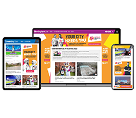

Sold a product you haven’t used before? Or just need a refresher on
an old favourite? It’s all right here…
Process Cards
Copywriting
Design
Development
Video
CM Supplied
view full card
CM Supplied
view full card
CM Supplied
view full card
-- creative options
3 routes to the
right
creative
Great creative wins business. From a single visual to a fully formed campaign, or even just a great idea,
bringing creative into your pitch lets your client see what Reach can really deliver...
3 ways to get brilliant creative in front
of our customers
creative concepts
120+ pre-designed multiformat campaigns
Loads of industry sectors to choose from
Perfect for cold calls, initial pitches or lapsed customers
All ready & waiting to drop into your presentation
Search through Creative Concepts in Seismic and add what you need
creative store
120+ pre-designed multiformat campaigns
Loads of industry sectors to choose from
Perfect for cold calls, initial pitches or lapsed customers
All ready & waiting to drop into your presentation
Search through Creative Concepts in Seismic and add what you need

bespoke creative
120+ pre-designed multiformat campaigns
Loads of industry sectors to choose from
Perfect for cold calls, initial pitches or lapsed customers
All ready & waiting to drop into your presentation
Search through Creative Concepts in Seismic and add what you need